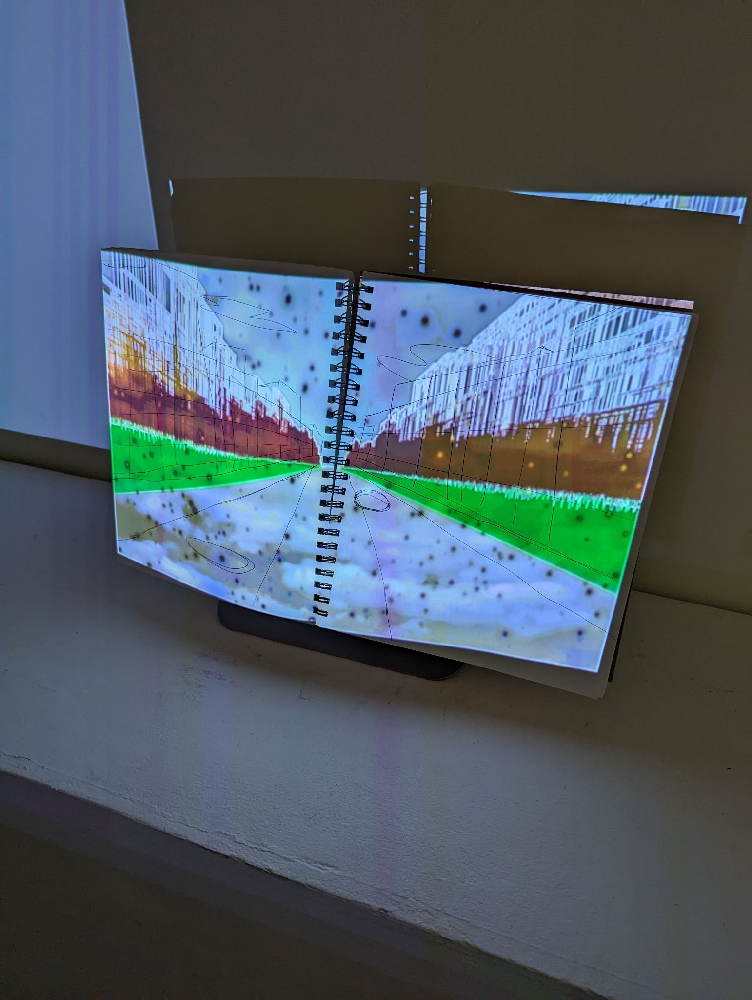
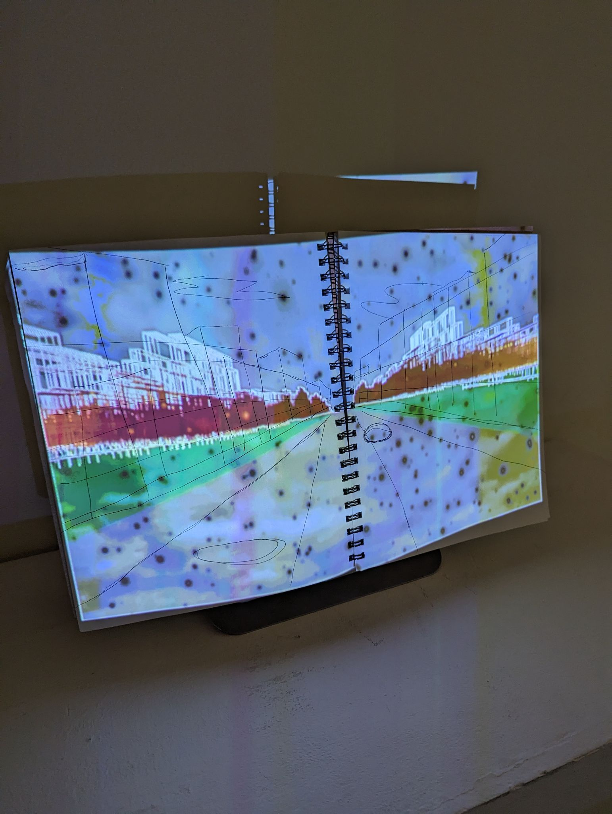

Selected project
Dreams of Wires
Projection with physical component. This piece evokes the transition from the suburbs into a city. A child's imagined city is sketched on pages while a projected digital city and the sound of traffic introduce the bustle of urban life. As the traffic grows louder, buildings grow chaotically; the pages become a canvas where the physical sketch and projected cityscape overlap.

